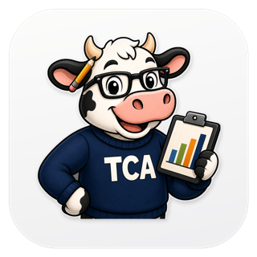

Visualize your school’s IAR assessment data — right on your own computer.
Windows may warn that the publisher is unknown. Choose More info → Run anyway. We’re working on removing that warning.
The app updates itself. Once it’s installed you won’t need this page again — it’ll offer new versions as they’re released.